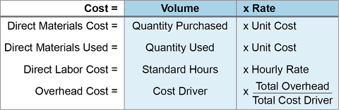
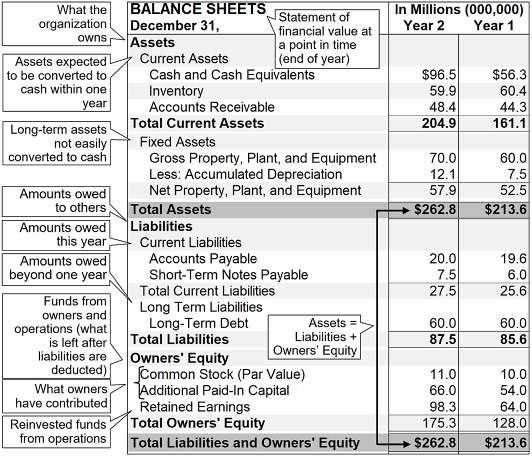
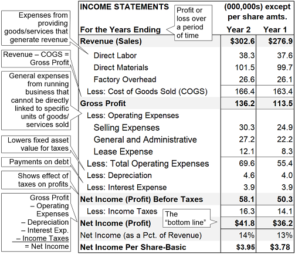

After finished goods are scheduled for production to satisfy demand, the necessary raw materials and components are calculated using material requirements planning (MRP). Also, inventory levels at specific locations are planned using distribution requirements planning (DRP). Besides discussing MRP and DRP, here we explain a number of manufacturing specifics: routing files, lot-for-lot or fixed order quantity replenishment, and offsetting.
Material Requirements Planning
📖 ASCM Definition — material requirements planning (MRP):
📖 ASCM Definition — dependent demand:
📖 ASCM Definition — independent demand:
While independent demand is the subject of demand forecasts, dependent demand is not. Before you can talk about dependent demand for pockets and zippers and bolts of denim, there has to be independent consumer demand for jeans—or at least a demand plan based on a forecast. There can, however, be independent and dependent demand for the same item. For example, an item may be used as a component in finished production but also sold independently as a repair part or upgrade item. Auto parts stores stock replacement parts for independent sales to individuals and repair shops. Shelves in electronics stores contain numerous computer subsystems sold as upgrades. Those items are subject to independent sales and production forecasts. The same items are also ordered by manufacturers who base their orders for components on demand forecasts for the finished computers.
Dependent demand doesn't require estimation, only calculation. A scheduled demand for 1,000 pairs of blue jeans to be delivered in March to a major chain store creates a dependent demand for 1,000 right legs, 1,000 left legs, 2,000 front pockets, 1,000 zippers, 1,000 snaps, several thousand belt loops and rivets, and, further up the supply chain, bolts of denim, tons of cotton, kilograms of metal, and so on.
MRP plans all the orders that will get those materials to the right work centers or suppliers at the right times to get those blue jeans put together on the dates specified in the MPS.
Exhibit 4-6 illustrates the data inputs required for MRP and the resulting outputs.

MRP Inputs
As you can see from Exhibit 4-6, inputs to MRP include the master production schedule, inventory status, planning factors, and bills of material.
The master production schedule lists planned or scheduled orders for end items—tables, computers, automobiles, finished clothing, etc. The ASCM Supply Chain Dictionary defines the following terms related to item orders.
Planned order is
a suggested order quantity, release date, and due date created by the planning system's logic when it encounters net requirements in processing material requirements planning. In some cases, it can also be created by a master scheduling module. Planned orders are created by the computer, exist only within the computer, and may be changed or deleted by the computer during subsequent processing if conditions change. Planned orders at one level will be exploded into gross requirements for components at the next level. Planned orders, along with released orders, serve as input to capacity requirements planning to show the total capacity requirements by work center in future time periods.
Note that to be more precise, references to "the computer" in this and the next definition could be replaced by "MRP software."
Firm planned order (FPO) is
a planned order that can be frozen in quantity and time. The computer is not allowed to change it automatically; this is the responsibility of the planner in charge of the item that is being planned. This technique can aid planners working with material requirements planning systems to respond to material and capacity problems by firming up selected planned orders. In addition, firm planned orders are the normal method of stating the master production schedule.
An open order (released order) is "a released manufacturing order or purchase order."
A scheduled receipt is "an open order that has an assigned due date."
Inventory status is what materials are already available for use in manufacturing the finished goods and what finished goods exist now.
Planning factors include safety stock concerns and lead times (how long it will take to get each component after it has been ordered; this is necessary for proper timing of orders).
The bill of material (BOM) is a complete list of components and the quantities of each needed to make one unit of the end item—the "product tree." A BOM provides the basis for answering the questions "What do we need?" and "How many of them do we need?" In its simplest configuration, a bill of material is an ingredient list, enumerating quantities of every component required to manufacture an item. It can also do a great deal more, such as enabling building modular components.
Exhibit 4-7 provides an example of a multilevel bill of material for a ½-horsepower electric motor.
📖 ASCM Definition — multilevel bill of material:
📖 ASCM Definition — parent item:
Exhibit 4-7 shows that the motor parent JTE-5000 3000 1 01 contains the following components, some of which are parents to other components:
One stator assembly (part number 0010 L JTE-4001)
One rotor assembly (part number 0020 L JTE-4002)
One end bell-top (part number 0030 L JTE-4003)
One end bell-bottom (part number 0040 L JTE-4004)
Four six-inch screws (part number 0050 L JTE-4005)
The user can click the arrows to the left of the part numbers (far left of the screen) to reveal the parts needed to assemble those components. In the exhibit, the arrows pointing downward have already been clicked to reveal their components, while the arrows pointing to the right could still be clicked to drill further down into the details for each component. In this way a user can see the steady "explosion" of the parts tree for all the components of the BOM or keep the BOM at a high level as needed.
Another type of BOM is the modular (planning) bill that pertains to the construction of a module that is not a finished product but is a component for use in a product. In a mass customization situation, operations may focus on the creation of a number of modules for later assembly. The MRP in that case schedules orders for the materials used in constructing the modules. Companies can also use a configure-to-order process that presents modular options when the sales order is being entered.
MRP Outputs
With the information from the master production schedule and bill of material and on inventory status and planning factors, it is possible to develop a complete schedule for ordering (and delivering) all the components and materials necessary to create the items in the master schedule. The MRP process results in planned orders for making or buying all the components required. It typically includes the following specifications as defined in the ASCM Supply Chain Dictionary:
- Planned order receipt. A planned order receipt (planned receipt) is "the quantity planned to be received at a future date as a result of a planned order release. Planned order receipts differ from scheduled receipts in that they have not been released."
- Planned order release. A planned order release is "a row on a material requirements planning table that is derived from planned order receipts by taking the planned receipt quantity and offsetting it to the left by the appropriate lead time." Planned order releases may differ depending on whether the order needs to be manufactured or purchased.
- An exception report. This is "a report that lists or flags only those items that deviate from the plan."
When the planning system calculates net requirements in MRP, it generates a set of planned orders, which are subject to change until orders are either made into firm planned orders by the planner or are released to become open orders or scheduled receipts (if assigned a due date). A planned order receipt is the same as a scheduled receipt except that it is used for planned orders (i.e., not yet released) and so there is still some uncertainty whether the order will be released.
Note that when a family of related items is released as if it were one item, it is considered a joint replenishment system. According to the ASCM Supply Chain Dictionary,joint replenishment is a process of
coordinating the lot sizing and order release decision for related items and treating them as a family of items. The objective is to achieve lower costs because of ordering, setup, shipping, and quantity discount economies. This term applies equally to joint ordering (family contracts) and to composite part (group technology) fabrication scheduling.
Manufacturing Specifics
Other aspects of manufacturing related to MRP are the routing file, lot-for-lot or fixed order quantity replenishment, and offsetting.
Routing File
When planning a trip, travelers can refer to route on a map. In manufacturing, we also look for the route, which is found in a routing file (router file or route sheet). The router maps the journey of a component from work center to work center, specifying all the operations it undergoes on the way to completion. It indicates each of the manufacturing steps required, the sequence of the steps, and the time required. There will be one entry for each operation. This can be very simple, such as the process shown in Exhibit 4-8 for an orange juice operation, or very complex, such as if the component travels around a global supply network with numerous partners. Note that this complexity would be broken down to be more palatable by having major part numbers each have their own set of routings.
Lot-for-Lot or Fixed Order Quantity Replenishment
While inventory replenishment for independent demand may include some safety stock as a buffer against demand uncertainty, that sort of variability doesn't affect dependent demand. There's no buffer necessary, so any safety stock would only be a waste of money for storage space, handling, and production capacity. Also, using a fixed order quantity (FOQ) often makes sense for the production of end items because it can provide production efficiencies. However, if each dependent demand component were ordered in lots, this can result in a huge number of components accumulating that may not experience any demand for a long time. Therefore, a lot-for-lot replenishment technique is typically used for most dependent demand. In lot-for-lot replenishment, the exact number of components needed for production is the number that should be produced and delivered when needed.
When operations for filling dependent demand orders allow batch sizes to vary, lot-for-lot is the favored technique. However, an FOQ technique must be used rather than lot-for-lot for operations that require fixed batch sizes and order quantities (e.g., accommodating a fixed vat size for beer brewing).
Lot-for-lot scheduling depends upon the following essential information:
Gross delivery required
Projected amounts on hand for delivery
Scheduled receipts (more potential deliverables)
Net requirements (gross minus on-hand items and scheduled receipts)
Lead time (so operations can be scheduled in time to meet the delivery date)
With that information, you can specify the date to release the order and the date it will be received. The example in Exhibit 4-9 assumes weekly deliveries and a one-week lead time.

Note in the exhibit that planned order releases (bottom row) are always equal to planned order receipts in the next column to the right and up one row. The orders released always equal the orders to be received—because in this example there is a one-week offset for lead time to produce the order.
In week 1, you will see that there is no net requirement even though the gross requirement is 35 units. That's because the week starts with 35 units projected on hand—enough inventory to fill the order without setting up for production. After that first week, gross and net requirements are equal because there is no more inventory on hand.
Offsetting
We just looked at a series of orders for one component. Scheduling the orders for all components for a product is more complicated. Why? Because the components are likely to have different lead times. If you want them all to arrive simultaneously at one work site or work center, you have to schedule different release dates based on the different lead times.
This process of counting backward from a due date to accommodate lead time is called offsetting.
This process of counting backward from a due date to accommodate lead time is called offsetting. If you had a simple product with two components, product A with a lead time of one week and product B with a lead time of two weeks, you would release the order for A one week before the order receipt date and you would release B two weeks before the order receipt date.
Real products can be complex, of course, with the components themselves having components, and those components having components, and all of them having different lead times. As shown in Exhibit 4-10, let's say product A is constructed from components B and C over a lead time of one week. Assume that component B has a lead time of two weeks and is itself constructed from components D and E, with lead times of one and two weeks respectively. Similarly, component C has a lead time of one week but is also assembled from components E and F with lead times of two and three weeks respectively. Finally, component F has to be constructed of components D and G, with lead times of one and two weeks.

Managing MRP
There is a degree of inflexibility built into MRP, because it uses fixed lead times. MRP has ease of replanning among its strong points, especially if you're using software that sorts out the impact that a change in one part of a schedule can have on the other parts. In the net change approach, only those parts of the MRP that require changes have to be altered. Regeneration of the entire plan is the more difficult alternative.
Feedback Loops and System Nervousness
Good supply chain planning contains numerous feedback loops so that one level of planning can test the assumptions of the previous level and ask for changes if the plan seems impracticable. Regular S&OP meetings are one place where feedback can be received and processed almost continuously. The MRP is also subject to change when events such as changes in design or the master production schedule make alterations seem necessary. The plan may be revised as often as daily to keep current with changing data.
However, too frequent alteration of the plans can be extremely expensive and demoralizing to staff, such as purchasers and production schedulers. Frequent and often frantic adjustments to MRP are known as system nervousness. Each change can result in multiple components needing to be rescheduled or expedited. To avoid this consequence, managers should consider possible problems before allowing too many changes.
Time fences in the master schedule are one way to ease the system nervousness. They designate cutoff when automatic rescheduling is not allowed even if changes are made to the MRP—unless an exception order receives specific authorization.
📖 ASCM Definition — pegging:
When a pegged component is affected by a schedule change, someone can easily check to see what happened to its parent. It may turn out that the schedule change for the component was a mistake. Or, if there is an availability issue with a lower-level item, the planner can quickly check which end items will be affected and take countermeasures to minimize harm to the overall production schedule.
System nervousness is not always a mere annoyance to be suppressed. Nervousness can make an otherwise sound system costly and inefficient. Sometimes it's a symptom of excessive reprioritizing on the shop floor or in purchasing. This can underlie a variety of problems, such as quality issues or other conditions, and root causes should be sought to see if the nervousness is a result of problems in those areas.
Reconciling Just-in-Time or Lean with MRP
The fixed lead times in MRP can come into conflict with JIT's or lean's commitment to moving materials as fast as possible to reduce inventory costs. Two ways to reconcile MRP and JIT or lean are the small bucket or bucketless approach and balanced flow:
Small bucket or bucketless systems. MRP typically uses a bucket system of timing orders. For instance, an MRP might schedule all the orders in week-long time buckets. Reducing the bucket size from a week to a day or even less speeds up the flow considerably by allowing material releases to stagger.
Some work centers don't use buckets for scheduling at all but attach dates to each item. In bucketless systems, orders can move through the work area on a JIT basis. As soon as an operation is complete, the item moves into inventory, reducing the quantity of scheduled receipts in the MRP system. Inventory balances are then reduced by backflushing, which means using the bill of material to deduct component quantities from inventory as soon as the unit has been completed.
Balanced flow. Another way of combining JIT and MRP, called balanced flow, is used in repetitive work centers such as assembly lines. MRP takes care of the scheduling and planning for delivery of parts to the line in small lots. JIT pulls the materials through the facility with visual signals such as kanban cards or empty bins.
Evolution of MRP Software
Software to manage MRP has been evolving for a long time. Before MRP software existed, developing material requirements was a time-consuming and arduous task. With the software, planners were freed of the manual tasks and could dedicate more time to actual planning decisions. Early forays into MRP steadily evolved until MRP II (defined below) crossed the functional borderline out of manufacturing and into other areas. And beyond that, ERP (enterprise resources planning) software, starting basically as an extension of MRP II across all the functions of an enterprise, has now developed modules that link all business functions and even multiple supply chain partners.
Here are the highlights of MRP, closed-loop MRP, and MRP II—steps in the evolution of software from those first bills of material toward resource planning across the supply chain and linking of material planning with actual demand.
MRP Software
Material requirements planning software programs take information based on bills of material, component lead times, and incoming orders to schedule manufacturing dates.
One difficulty operations managers have experienced with MRP systems is the software's assumption that all work centers in the chain have infinite capacity. This assumption can result in the generation of impossible schedules.
Setting aside that problem, MRP systems provide very important benefits:
- They can improve on-time delivery percentages, thereby reducing component inventories and holding costs.
- They can free a scheduler to spend less time on scheduling tasks and more time on planning and exception resolution.
Closed-Loop MRP
Closed-loop MRP refines basic MRP because it incorporates feedback on available capacity. It calculates the impact of each order on the work center that is scheduled to complete the order, and, if it finds too little capacity at that center, it may send the order to another work center or site, outsource it, or change the order date.
Closed-loop MRP also leverages feedback from the execution functions to the planning functions to ensure that replanning occurs. Both status information (order status, inventory balances, etc.) and warning signals/exception messages (behind schedule, overloaded, etc.) are passed back to planning. This facilitates the maintenance of valid plans and schedules.
MRP II
📖 ASCM Definition — manufacturing resource planning (MRP II):
MRP II is the first upgrade of MRP to include other functions such as sales and finance. To recognize this advance in scope and power, it is generally called manufacturing resource planning, a term coined in 1979 by Oliver Wight, instead of material requirements planning. MRP II incorporates the following function upgrades:
- It includes financials—a separate functional area from manufacturing.
- It provides visibility of material and capacity requirements defined in an operations plan.
- It provides detailed activity information and translates activities to financial statements.
- It suggests ways to bring activities back into line with planned priorities.
- It integrates long-term planning (business planning and methodologies that evolved into S&OP) with operational planning.
Distribution Requirements Planning
Distribution requirements planning (DRP) is "the function of determining the need to replenish inventory at branch warehouses" (ASCM Supply Chain Dictionary). DRP organizes inventory requirements so the organization has time to plan for when and how many goods will be required.
Pull versus Push Distribution
Before we look more closely at DRP, we'll draw a distinction between systems that pull inventory through the distribution chain toward the retail end and systems that push inventory down the chain. In reality, most distribution chains include elements of both push and pull. The questions for supply chain managers are
Which system is best adapted to the needs of the supply chain?
Where should the line of demarcation between push and pull be located?
Note that manufacturing also uses push and pull to describe whether operations are pulled by actual demand (as in JIT) or pushed by forecast demand, but push versus pull manufacturing strategies are not necessarily related to push versus pull distribution strategies. For example, a JIT environment could operate based on actual demand pull and then perform centralized push distribution to get those orders to the correct customers.
📖 ASCM Definition — push system:
📖 ASCM Definition — pull system:
You might call this a system of serial autonomy, with each partner along the distribution chain making its own ordering decisions. As a system, however, it's not especially systematic. It doesn't take advantage of the essential strengths of supply chain management, which are collaboration and mutual decision making.
There are three particular drawbacks to the pull system:
- Orders are likely to increase as they travel up the chain (the bullwhip effect).
- The company doing the ordering knows nothing about the needs and plans of the other chain partners, who may have a greater need for the stock to meet customer service goals.
- The order doesn't take into account the supplier's situation.
Push systems solve some of these problems but with a tradeoff. The downstream partners receive shipments on schedules developed elsewhere in the network rather than when they order it. While this can be beneficial to the supply chain by providing systemwide coordination of inventory management, it is less likely than the pull system to be sensitive to local market conditions.
This very common replenishment strategy can increase centralized control by moving the point of push to pull down the chain or increase decentralized control by moving the point up the chain.
DRP is a hybrid system because it contains both push and pull elements. Hybrid systems are push-pull systems in which push distribution is pursued through centralized planning down to a particular supply chain level or echelon but pull distribution through decentralized planning is used after this point. For example, centralized planning could use information on demand from the retail end of the chain, aggregate this demand at the regional distribution centers (DCs), and push inventory to these DCs. The customers of these DCs, perhaps wholesalers and retailers, then order inventory from these DCs as they see fit. This very common replenishment strategy can increase centralized control by moving the point of push to pull down the chain or increase decentralized control by moving the point up the chain.
DRP Components
Distribution requirements planning combines the following inputs:
Demand forecasts from distribution centers to determine the gross requirement
Safety stock for customer service
Accurate lead time information
Overall knowledge of the distribution system (a mapping akin to a bill of material that shows how the distribution network is configured)
Exhibit 4-11 shows what goes into and comes out of a DRP system.

DRP Logic
DRP system logic translates DC demand into forecasts for use in factory master scheduling. DRP logic typically uses time-phased netting of requirements (net requirements per period or bucket) rather than a decentralized order point (pull) system.
Exhibit 4-12 illustrates DRP logic using distribution centers A and B, a central supply location, and a master schedule grid for a factory.

Planned order releases from DCs A and B are released to central supply according to each DC's demand requirements and lead times. In the exhibit, DC A and DC B release planned orders in week 6 for 400 and 500 units respectively. Central supply has a three-week lead time, a projected available balance of 500 units, and a lot size (order quantity) of 600 units. Therefore, to fill the planned order releases of 900 units, central supply releases a planned order for 600 units in week 3 (to account for the three-week lead time and lot size), which will leave a projected available balance of 200 units (equal to its safety stock requirement). Central supply's planned order release of 600 units becomes a gross requirement in the master schedule grid. This allows the distribution centers' time-phased requirements to be factored into the factory's master production schedule.
Benefits of Push and Pull Elements in DRP
Distribution requirements planning combines the coordinated planning and control offered by push systems with the responsiveness to local demand that characterizes pull systems.
Although orders originate downstream (that is, toward the retail end), they are evaluated at the supplying locations before being released to determine the actual need at the ordering location and the availability of goods at the sites receiving the order. This helps prevent shortages at supplying sites and overstock at ordering sites. In this way, DRP keeps inventory in balance around the network.
Because the hybrid DRP system combines information from both supplying and ordering locations, it can, in theory, provide more accurate allocations of stock than either straight pull or push systems, which take into account the needs of only the ordering or the supplying location. Because the DRP system is based on more accurate data and more thorough assessments of need and available supply, it should allow release of smaller, more frequent orders than straight pull or push arrangements. And this in turn provides the supply chain with the benefit of better customer service and lower inventory costs.